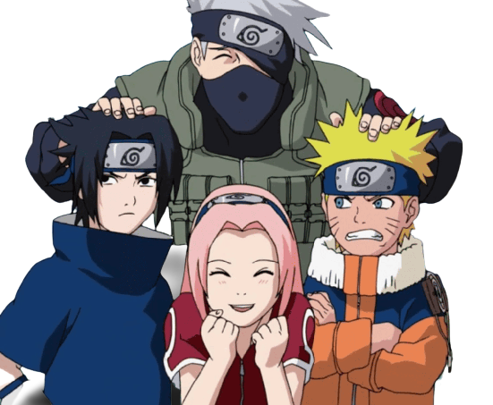

Hi, I am Naruto Uzumaki.
My name is Naruto Uzumaki, and I'm a ninja from the Hidden Leaf Village. I'm part of Team 7 with Sasuke and Sakura, and I have a dream of becoming the Hokage - the leader of the village and the most powerful ninja in the land.I wasn't always the most popular kid in the village, though. I have a powerful force inside me called the Nine-Tailed Fox, and it caused many people to fear and avoid me. But I never let that get me down. I worked incredibly hard to become a skilled ninja, and I've learned a lot of powerful jutsus along the way. But being a ninja is about more than just fighting and jutsus. It's also about having a strong sense of teamwork and camaraderie. That's why I'm so proud to be a member of Team 7. We've faced some incredibly tough challenges, and we've come out stronger on the other side. I know that my dream of becoming Hokage is going to be a long and difficult journey. But I'm not afraid of hard work, and I'm not afraid of failure. I know that if I keep my head held high and never give up, I'll be able to achieve anything I set my mind to.

Team 7 is a special team of ninja that consists of myself, Naruto Uzumaki, Sasuke Uchiha, and Sakura Haruno. We were put together by our sensei, Kakashi Hatake, to complete missions and train as ninja.Sasuke is the quiet and serious one in the group. He comes from a prestigious ninja clan and is incredibly skilled in both taijutsu and ninjutsu. He has a fierce determination to become stronger and avenge his clan. Although he may seem distant at times, he's a valuable member of our team and has saved us on numerous occasions with his incredible abilities.Sakura is the smart and determined one in the group. She's incredibly intelligent and has a talent for medical ninjutsu. She's always pushing herself to become stronger and is a great support to the team. She may not have the same fighting prowess as Sasuke or myself, but her intelligence and determination make her an invaluable member of our team.And then there's me - Naruto Uzumaki. I'm the loud and enthusiastic one in the group. I may not be the smartest or the strongest, but I never give up and I always find a way to succeed. I have a powerful jutsu called the Rasengan, and I'm also able to use the power of the Nine-Tailed Fox inside me. I have a dream of bringing peace to the ninja world and becoming the greatest Hokage ever.Together, we make up an unstoppable team. We may have our differences and quirks, but we have each other's backs and we work together seamlessly on missions. We've faced some incredibly tough challenges, but we always come out on top because we trust and rely on each other. Team 7 may just be a group of ninja, but to us, we're family.
>
Ramen
I love ramen more than anything. Whenever I am hungry the pervy sage takes me to the ramen shop and iruka sensei too. I love to have my meeshow sour naruto special ramen. I can eat bowls and boars of ramen more than anything. Nobody can beat me in a ramen contest , I doubt it even for choji. Believe it!
Pervy Sage
Pervy sage was one of the greatest ninja to ever live. He was strong, wise, and always had a kind heart. He taught me so much about being a ninja, but more importantly, he taught me about being a good person. He was like a father figure to me, and I learned so much from him. He believed in me, even when no one else did, and he helped me to become the ninja that I am today.

Iruka Sensei
Iruka-sensei is one of the most important people in my life. He was the first person who ever really believed in me and saw past my mischievous behavior.He's been like a father to me.When I was a kid, I was always looking for someone to acknowledge me, to tell me that I was doing well. And Iruka-sensei was that person. He's the reason that I'm the ninja I am today.
Konoha
The people of Konoha have always been there for me, even when I was a troublemaker and an outcast. They gave me a chance to prove that I was worthy of their trust. It's the place where I've made some of my closest friends, where I've laughed and cried and grown as a person. It's where I met pervy sage. And it's where I've fought some of my toughest battles, both physical and emotional.
Sakura
Sakura is an important person in my life. We've been through a lot together, and I have a lot of respect for her as a ninja and as a person.But I have to admit, our relationship hasn't always been easy. I used to have a crush on Sakura, and I did some pretty stupid things to try to impress her. But as we grew up and faced more serious challenges, our relationship changed. I came to see her as a friend

Sasuke
Sasuke is someone who's been a big part of my life, and I have a lot of mixed feelings about him.he's incredibly strong and skilled as a ninja. He's always been someone I've looked up to and admiredIt's been hard to watch Sasuke go down this path of revenge and isolation.Despite all of this, I still care about Sasuke. He's my friend and I don't want to give up on him. I know there's a good person buried deep inside him.